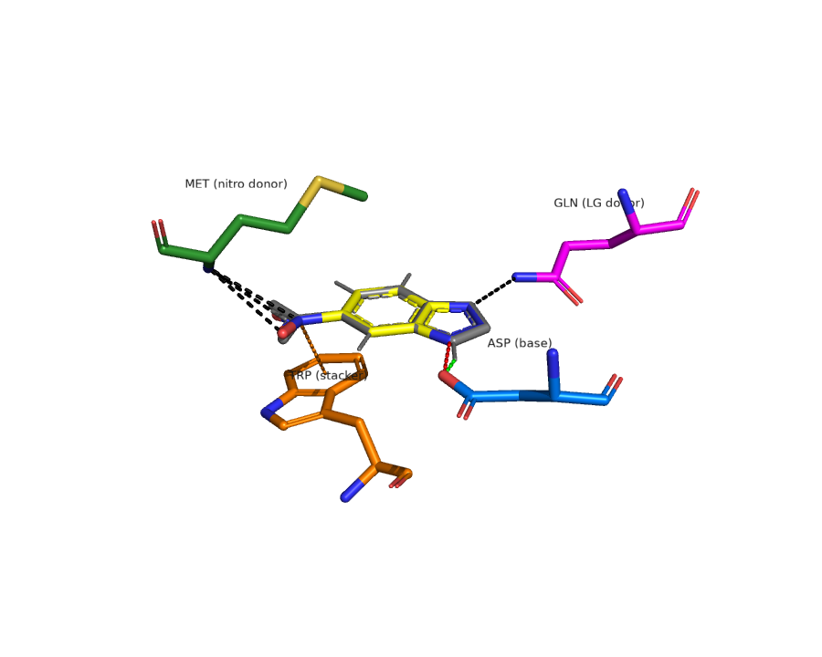

1 · HG-lineage full set
| Base | ASP A127 6SRY |
| Stacker (nitro) | TRP B44~ 3NYD |
| Nitro donor | MET A237~ 6SRY |
| Leaving-group donor | GLN A50~ 7K4Z |
real substrate: C3–H···O 1.48 Å at 160° · retraction for a ground-state fit 0.52 Å · proton-transfer score 0.91
Why. Asp127 base, Trp44 stacked on the nitro group, Met237 backbone N–H to the nitro oxygen, Gln50 donor to the ring-oxygen side: the active-site composition of HG3.17 and its relatives. Rank 1 of 3,402 distinct observed combinations under the default and evidence-heavy weightings and rank 5 under substrate-heavy. With the real substrate the C3–H points at the base (H···O 1.48 Å, 160°).
Risks. A composite of lineage parts, not one observed site: Trp44 is placed as in HG-2 (3NYD); in HG3.17-lineage crystals (6SRY) Trp44 sits 3.7 Å off the nitro and would score 0.10. Both donors are small perturbations (≤12°, ≤0.25 Å) of observed ones. The HG3.17 activity (≈2.3×10⁵) is from a web summary. Geometry-only it ranks 162nd.